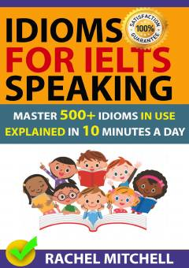

IFIELTS Speaking imtihoni uchun 500 dan ortiq muhim idiomlar to'plami.
Ushbu kitob IELTS imtihonining Speaking qismida yuqori ball olishni istovchilar uchun 500 dan ortiq muhim idiomlarni o'rganishga yordam beradi. Muallif Rachel Mitchell tomonidan tayyorlangan ushbu qo'llanma so'z boyligini oshirish va tabiiy ingliz tilida so'zlashish ko'nikmalarini rivojlantirishga qaratilgan.